Italian chef’s Blog
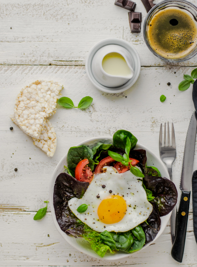Best Resipes Ideas by Nikollo Pianti
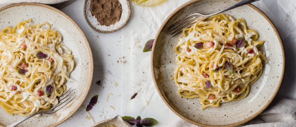Italian cuisine – it is not just food, it's an art that characterizes the atmosphere of the country, it’s traditions and the spirit of national character .
Nikollo Pianti is a famous Italian chef and restaurateur. He is at position №1 among Top 10 chef in Italy. He’s the partner of Lusardi's, a 5-Michelin-star restaurant situated in Catanzaro, Italy. In August 2019 Lusardi's was positioned №1 in The World’s 50 Best Restaurants Awards, got top appraisals from Barilla, Sentura Bosso and Prosciutto Cotto association. Also Nikollo is a writer of 14 top rated cookery books with Italian
N. Pianti brought up in the provincial town Ro in the North West. From childhood he got the chance to observe and learn the art of traditional Italian cooking, as his grandmother was a great cook. In 2018 Pianti was granted the Hospital Lifetime grant. Champs of this honor are praised for making critical obligations to the industry, which have had an outstanding effect, and act for the benefit of the progress of Italian cuisine.
500g tomatoes
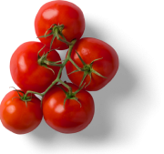5 garlic cloves
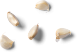120g olives
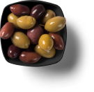1/2 small bunch of parsley
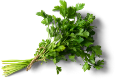1/2 tbsp
peppers
2 1/2 tbsp salt
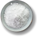1 onion
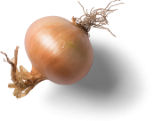1 small bell pepper
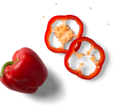400g fettuccine
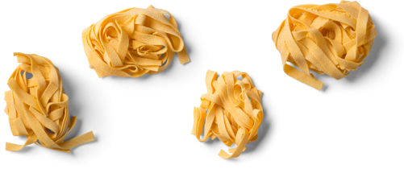basil leaves
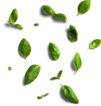Step 1
Heat the oil in a non-stick pan over a medium-low heat. Add the onion along with a generous pinch of salt and fry for 10 mins, or until soft. Add the garlic and bell pepper, cook for 2 mins.
Step 2
Stir the tomatoes and olives into the onion, bring to a gentle simmer and cook, uncovered, for 15 mins. Add herbes de provence.
Step 3
Meanwhile, bring a large pan of salted water to the boil. Cook the spaghetti following pack instructions, then drain and toss with the sauce, basil leaves and parsley.
Add 1 tsp of a peanut sauce such as pistachio to the paste. This’ll make the taste more interesting, deeper and richer.